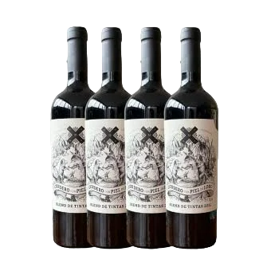
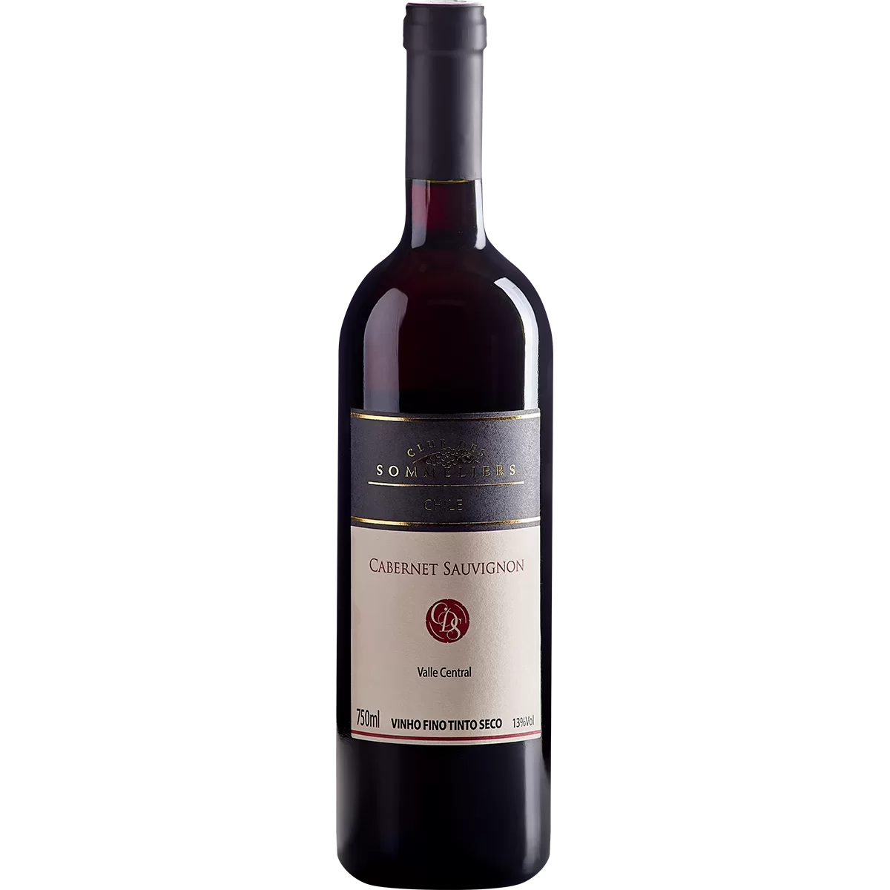
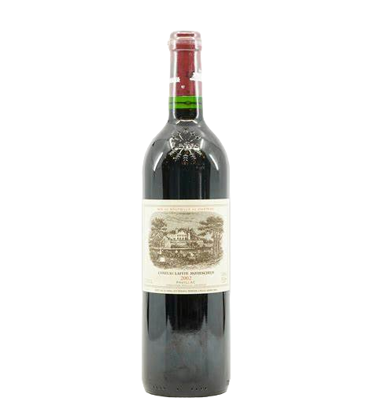

Vinhos Nacionais
Vinho Brasileiro Lidio Carraro Agnus Tannat
Vinho Salton Lunae Branco Demi-Seco
Arte Viva Elementar Merlot
Vinhos Internacionais
Vinho Argentino Blend
Vinho Chileno Tinto Cabernet Sauvignon CLUB DES SOMMELIERS
Vinho Tinto Francês Château Lafite Rothschild 75cl
Mais Especificações
Vinho Brasileiro Lidio Carraro Agnus Tannat
O Lidio Carraro Agnus Tannat é um vinho tinto brasileiro produzido na região de Serra Gaúcha pela Vinícola Lidio Carraro. Apresenta aromas de frutas negras, ameixa, canela e couro, com taninos maduros e retrogosto frutado.

Vinho Salton Lunae Branco Demi-Seco
O Salton Lunae Branco Demi-sec é um vinho brasileiro refinado produzido pela Vinícola Salton. Conta com aromas cítricos e de frutas como pêssego e maça verde.

Arte Viva Elementar Merlot
p>Esse Merlot foi reconhecido com a medalha de ouro na premiação realizada em Bordeaux, em 2023, também considerado como um dos melhores vinhos internacionais. O produto conta com aromas de frutas vermelhas, proporcionando um paladar elegante e persistente.

Vinho Argentino Blend
O argentino Blend é um vinho tinto seco de origem argentina, produzida em Mendonza/AR. Se destaca pelos aromas e sabores das frutas vermelhas maduras.

Vinho Chileno Tinto Cabernet Sauvignon CLUB DES SOMMELIERS
O Club Des Sommeliers Cabernet Sauvignon é um vinho tinto de origem chilena e se destaca pelos aromas de frutas vermelhas frescas e notas de especiarias doces.

Vinho Tinto Francês Château Lafite Rothschild 75cl
Um dos vinhos mais famosos do mundo, Lafite é um dos mais longevos e elegantes vinhos de Bordeaux. Notas de tabaco e chocolate amargo se mesclam a frutas vermelhas e cassis, além de toques de pimenta-preta e notas de grafite.